공통데이터모델(CDM) 소개
심화반 1일차 4-5교시 | RWD와 CDM
2026-07-22
Executive summary
CDM은 병원들의 데이터를 똑같은 형태로 만든다.
하나의 분석코드로 다기관메타분석 가능
분석 전과정에 R을 이용하나, Feedernet 에서 R없이 기본분석 가능.
Common Data Model(CDM)
Why CDM
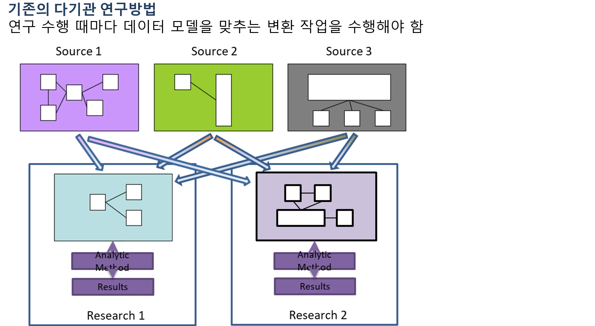
출처: 유승찬교수님 슬라이드.
Why CDM(2)
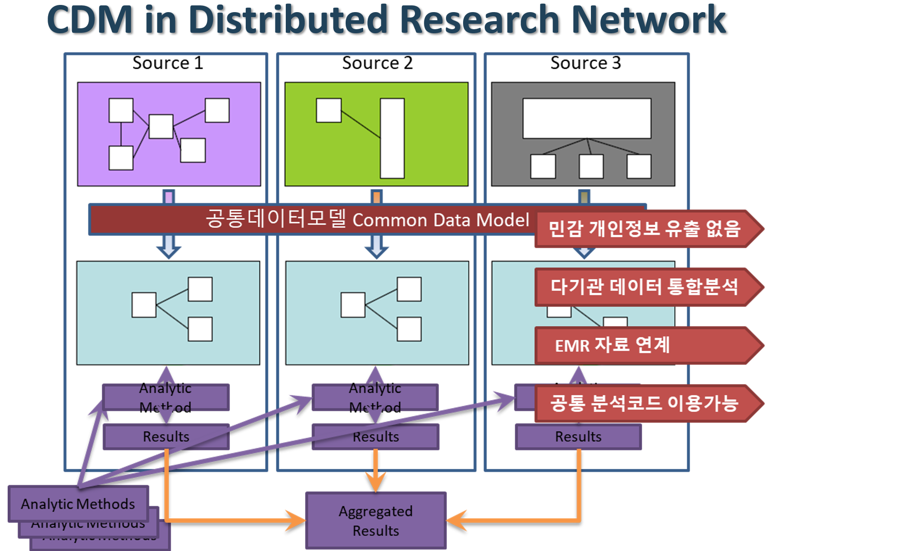
Why CDM(3)
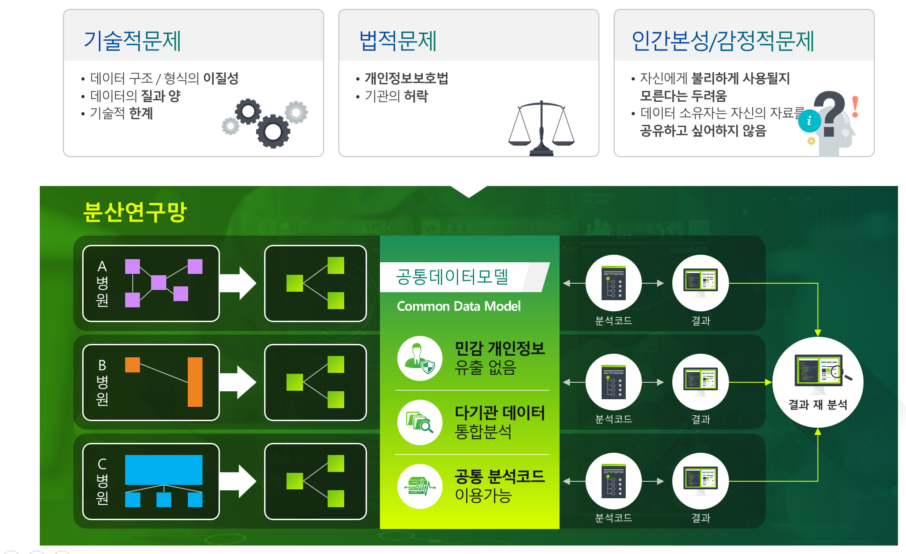
OMOP CDM
OMOP (2008-2013) www.omop.org
- OMOP = Observational Medical Outcomes Partnership
- Research on methods for drug safety evaluation
- Methods library developed; positive/negative drug outcome pairs
- Common Data Model (then, was a byproduct)
- Foundation for the NHI
- Transition to Reagan Udall Foundation for the FDA
OHDSI (after 2013) www.ohdsi.org - OHDSI = Observational Health Data Science and Informatics - Continues to use the name ‘OMOP CDM’ - Community of researchers; public; non-pharma funded
OMOP CDM V6
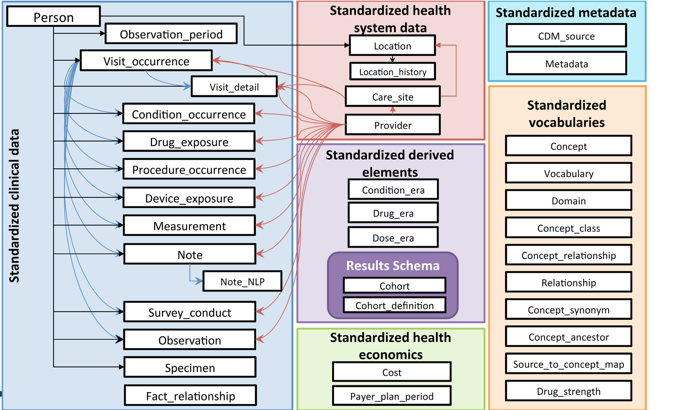
동일한 데이터 구조 뿐 아니라 OMOP 코드라는 공통 의료용어체계를 이용해 물리/논리적 공통모델을 사용함
Standardized Vocabulary 예
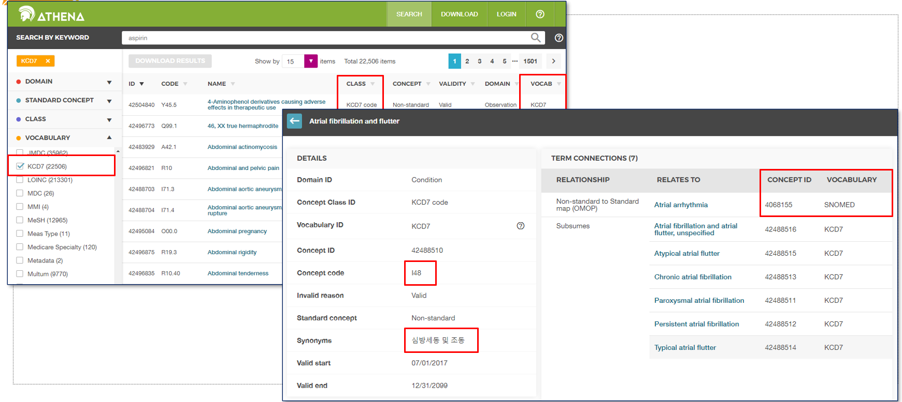
국내 참여 병원
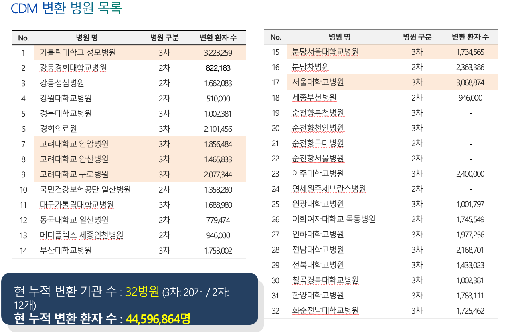
CDM with R
R first
CDM 분석 모든과정은 R패키지로 구현됨.

분석코드, 결과도 R패키지
연구설계, 분석방법이 포함된 자체 R패키지가 코드공유 표준.
- R패키지를 여러 기관에서 실행
https://github.com/zarathucorp/RanitidineCancerRisk
분석결과는 R Shiny로
실행결과를 R기반 웹애플리케이션으로 표현
분석코드에 웹코드도 포함되어있음.
ATLAS
웹기반 연구설계: R 몰라도 가능
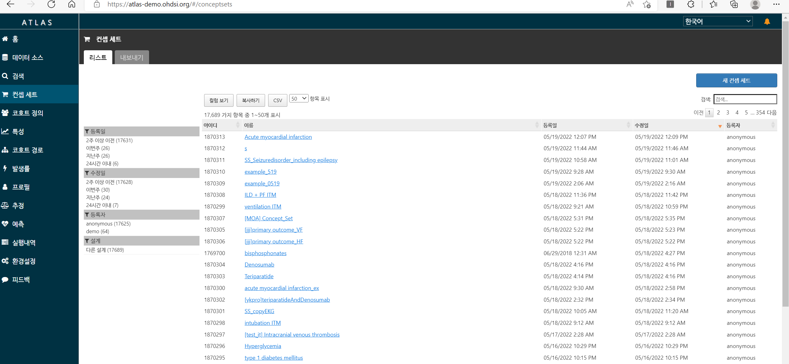
데이터 소스
데이터 선택: 기본정보 제공
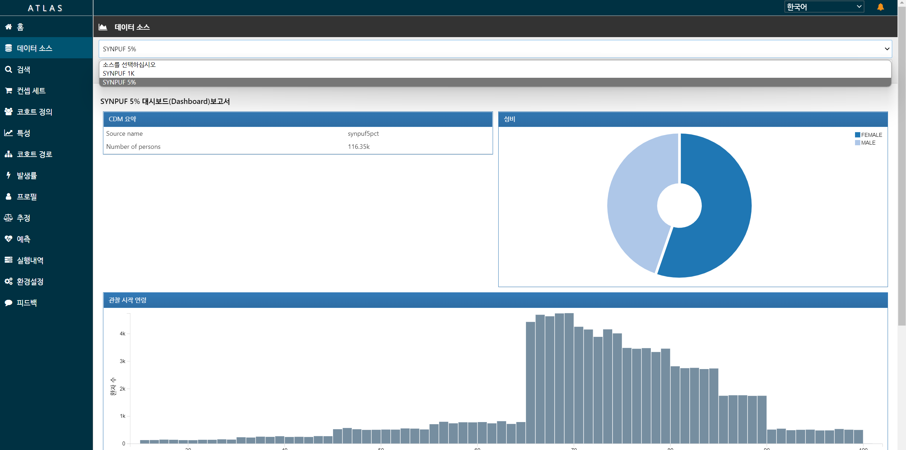
컨셉세트
연구에 이용할 개념 정의 - 예: 고혈압, ACEI, PCI..
- 사망은 기본으로 있음
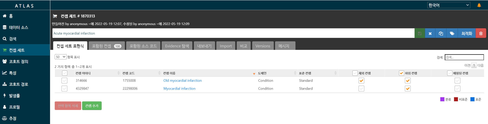
코호트 정의
컨셉세트 이용해 코호트 정의
최소 Target/Control/Outcome 코호트 3개 필요
Negative control 도 필요(자체만들기 or 기본제공)

분석
추정: Logistic/Cox
예측: xgboost, Lasso, 딥러닝
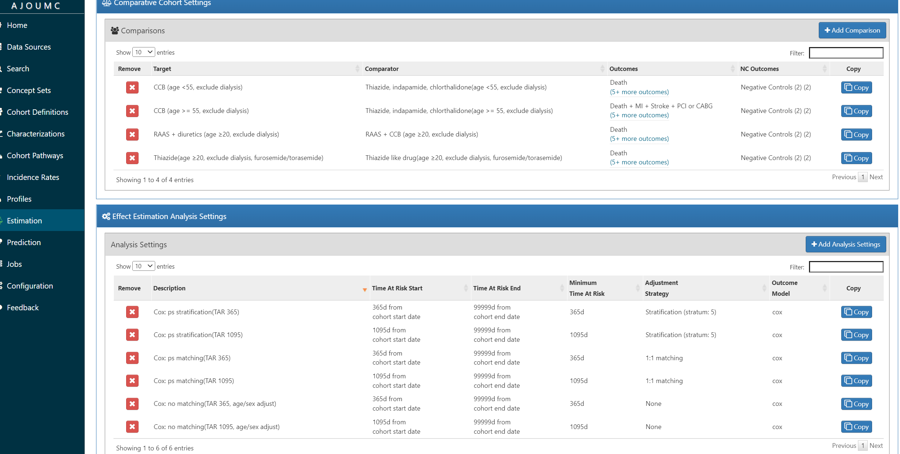
R패키지 다운
컨셉, 코호트, 분석이 모두 포함된 R 패키지 다운로드
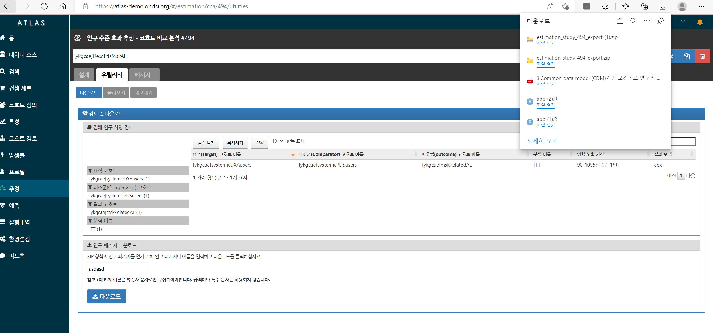
이후 (1)각 병원의 RStudio server 접속, (2)패키지 설치, (3)실행 하여 분석결과 zip 파일 얻음.
Feedernet 이용
가장 쉬운 방법 - R코드 안봐도됨.
- 다기관메타 쉽게 가능(분석할 병원 추가로 끝)
단점 - ATLAS 에서 지원하는 분석만 됨. 직접 수정한 R패키지 불가
- 접근권한 얻은 병원만 분석 가능. 소속, 신분에 따라 다름
분석은 심플하되, 다기관 물량으로 승부하는 컨셉
단계
(1) Feedernet 에서 Atlas, 분석실행 둘다 - Atlas에서 지원하는 분석, Feedernet 허가된 데이터만 분석가능
(2) Feedernet/각병원 Atlas로 설계, 분석은 R서버 접속. - Atlas에서 지원하는 분석, 자체 CDM설치병원의 데이터 분석가능
(3) 설계도 R로, 분석도 R서버 접속 - 자유롭게 분석설계 가능, 자체 CDM 설치병원의 데이터 분석가능
Textbook
공식 교과서: 친절한 예제, 영어버전은 무료공개

CDM 연구지원경험
심평원 Covid-19 데이터
- 한시적 오픈 with CDM버전, 패키지 만들어 심평원 보내면 실행결과만 보내줌.
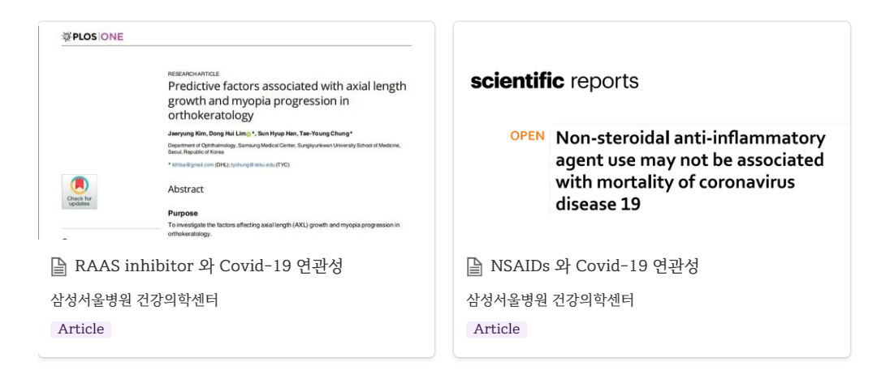
RAAS vs Other HTN drug in Covid-19
- https://journals.plos.org/plosone/article?id=10.1371/journal.pone.0248058#pone-0248058-g001
- https://www.nature.com/articles/s41598-021-84539-5
강동성심병원
첫 CDM 연구, ATLAS로 패키지만들고 강동성심 DB 접속해 R 실행
Kaplan-meier 그림을 논문용으로 업그레이드
https://onlinelibrary.wiley.com/doi/abs/10.1111/jgh.14983
공단표본코호트 V1
- CDM 변환된 공단표본코호트와, 원본 표본코호트 결과 비교
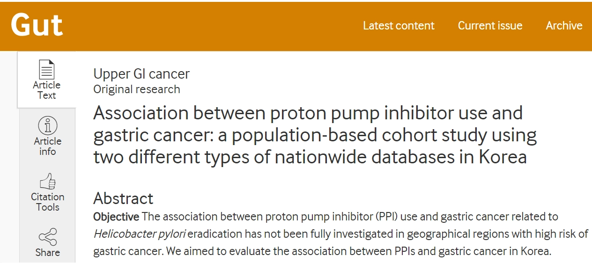
공단표본코호트 V1(2)
- CDM 변환된 공단표본코호트 이용
공단표본코호트 V1(3)
- CDM 변환된 공단표본코호트 이용
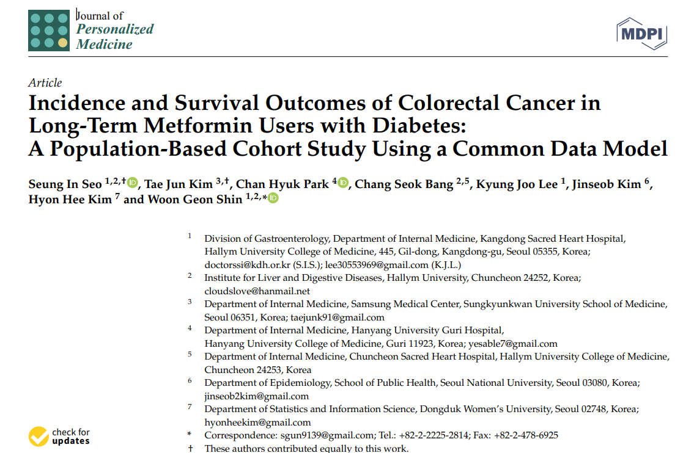

Feedernet 다기관메타
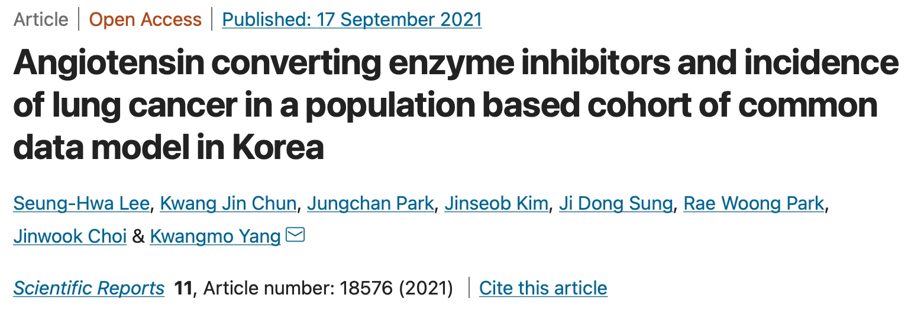
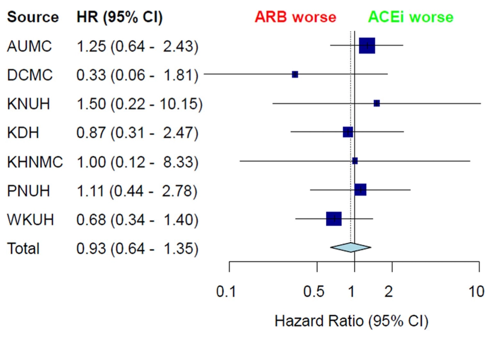
Feedernet 다기관메타(2)
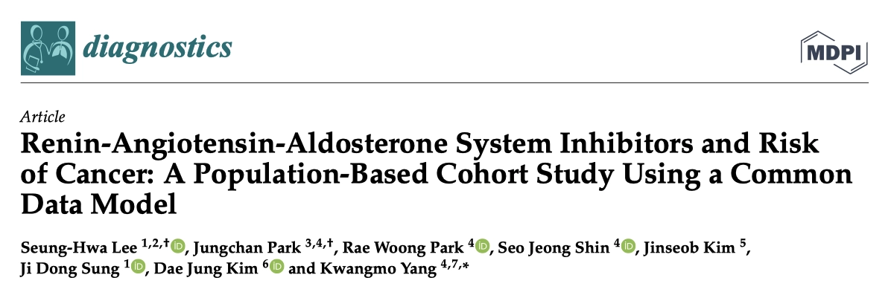
Feedernet 다기관메타(4)
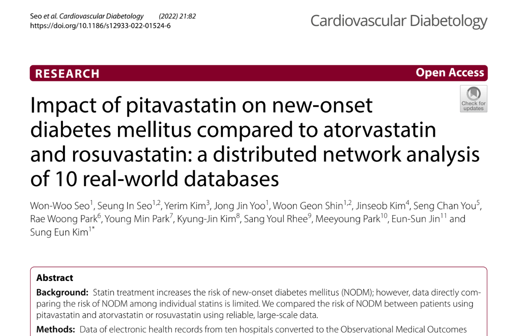

Executive summary
CDM은 병원들의 데이터를 똑같은 형태로 만든다.
하나의 분석코드로 다기관메타분석 가능
분석 전과정에 R을 이용하나, Feedernet 에서 R없이 기본분석 가능.
END
Zarathu Co., Ltd.